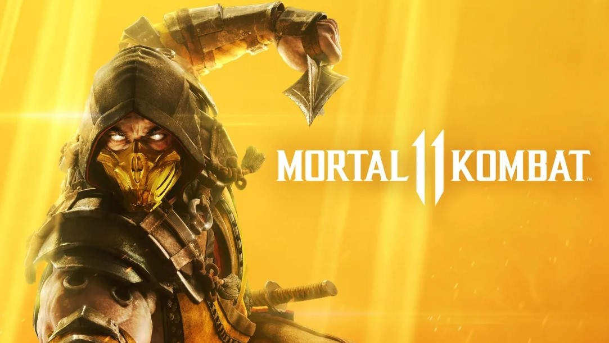
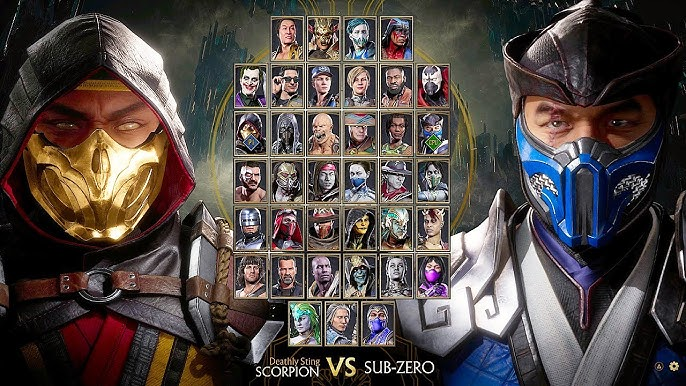
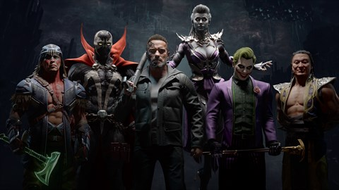
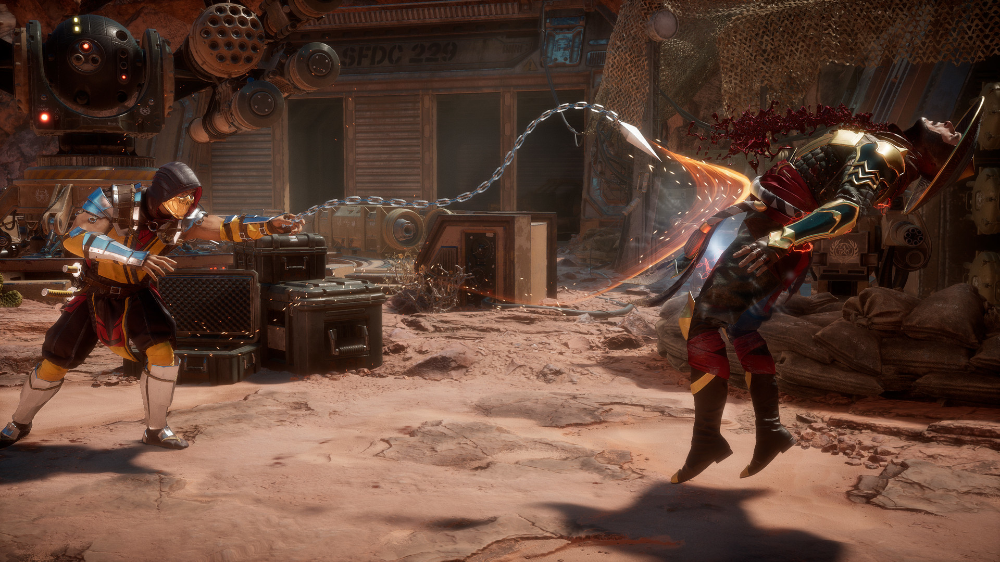
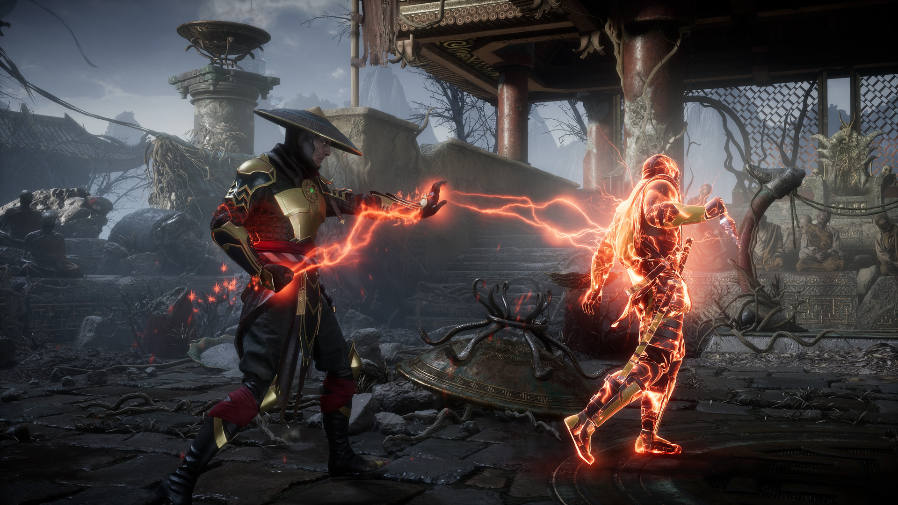
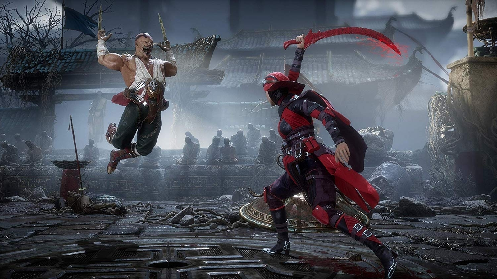

Mortal Kombat 11       Mortal Kombat 11 es un videojuego de lucha desarrollado por NetherRealm Studios y publicado por Warner Bros. Interactive Entertainment. Se ejecuta en una versión muy modificada de Unreal Engine 3, es la undécima entrega principal de la serie Mortal Kombat y una secuela de 2015 Mortal Kombat X Con las nuevas variaciones de personaje tendrás un control sin precedentes para personalizar a tus luchadores y hacerlos únicos. El nuevo motor gráfico resalta cada uno de los momentos más sangrientos para ponerte tan cerca de la pelea que casi podrás sentirla. Con un reparto de luchadores nuevos y klásicos, el modo historia cinemático continúa la épica saga iniciada hace más de 25 años. ESPECIFICACIONES PC: SO *: 64-bit Windows 7 / Windows 10 Procesador: Intel Core i5-750, 2.66 GHz / AMD Phenom II X4 965, 3.4 GHz or AMD Ryzen™ 3 1200, 3.1 GHz Memoria: 8 GB de RAM Gráficos: NVIDIA® GeForce™ GTX 670 or NVIDIA® GeForce™ GTX 1050 / AMD® Radeon™ HD 7950 or AMD® Radeon™ R9 270 DirectX: Versión 11 TAMBIEN CON CONSOLAS Red: Conexión de banda ancha a Internet Volver